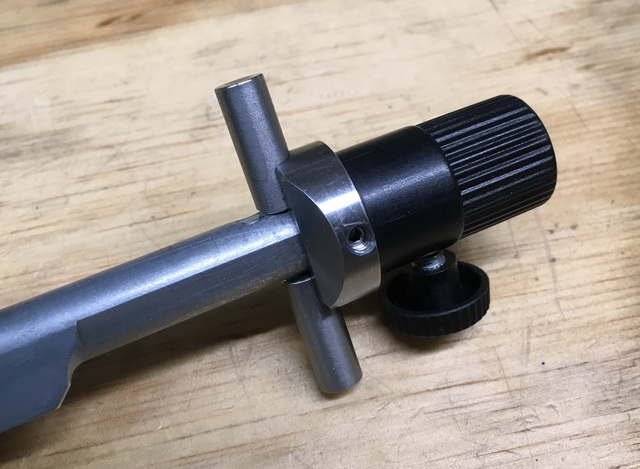

|
|

|
Marking Knives |

Guidelines shown below are for Included Angles (α).

Japanese marking knives are sharpened only one side. For those,
The Projection Calculator is available for calculating setup for Tormek knife jigs. This one is web-based and does not require Excel.)
| General Guidelines | |||||||||||||||||||||||||||||||||||||||||||||||||||||||||||||||||||||||||||||||||||||||||||||||||||||||||||||||||||||||||||||||||||||||||||||||||||||||||||||||||||||||||||||||||||||||||||||||||||||||||||||||||||||||||||||||||||||||||||||||||||||||||||||||||||||||||||||||||||||||||||||||||||||||||||||||||||||||||||||||||||||||||||||||||||||||||||||||||||||||||||||||||||||||||||||||||||||||||||||||||||||||||||||||||||||||||||||||||||||||||||||||||||||||||||||||||||||||||||||||||||||||||||||||||||||||||||||||||||||||||||||||||||||||||||||||||||||||||||||||||||||||||||||||||||||||||||||||||||||||||||||||||||||||||||||||||||||||||||||||||||||||||||||||||||||||||||||||||||||||||||||||||||||||||||||||||||||||||||||||||||||||||||||||||||||||||||||||||||||||||||||||||||||||||||||||||||||||||||||||||||||||||||||||||||||||||||||||||||||||||||||||||||||||||||||||||||||||||||||||||||||||||||||||||||||||||||||||||||||||||||||||||||||||||||||||||||||||||||||||||||||||||||||||||||||||||||||||||||||||
|---|---|---|---|---|---|---|---|---|---|---|---|---|---|---|---|---|---|---|---|---|---|---|---|---|---|---|---|---|---|---|---|---|---|---|---|---|---|---|---|---|---|---|---|---|---|---|---|---|---|---|---|---|---|---|---|---|---|---|---|---|---|---|---|---|---|---|---|---|---|---|---|---|---|---|---|---|---|---|---|---|---|---|---|---|---|---|---|---|---|---|---|---|---|---|---|---|---|---|---|---|---|---|---|---|---|---|---|---|---|---|---|---|---|---|---|---|---|---|---|---|---|---|---|---|---|---|---|---|---|---|---|---|---|---|---|---|---|---|---|---|---|---|---|---|---|---|---|---|---|---|---|---|---|---|---|---|---|---|---|---|---|---|---|---|---|---|---|---|---|---|---|---|---|---|---|---|---|---|---|---|---|---|---|---|---|---|---|---|---|---|---|---|---|---|---|---|---|---|---|---|---|---|---|---|---|---|---|---|---|---|---|---|---|---|---|---|---|---|---|---|---|---|---|---|---|---|---|---|---|---|---|---|---|---|---|---|---|---|---|---|---|---|---|---|---|---|---|---|---|---|---|---|---|---|---|---|---|---|---|---|---|---|---|---|---|---|---|---|---|---|---|---|---|---|---|---|---|---|---|---|---|---|---|---|---|---|---|---|---|---|---|---|---|---|---|---|---|---|---|---|---|---|---|---|---|---|---|---|---|---|---|---|---|---|---|---|---|---|---|---|---|---|---|---|---|---|---|---|---|---|---|---|---|---|---|---|---|---|---|---|---|---|---|---|---|---|---|---|---|---|---|---|---|---|---|---|---|---|---|---|---|---|---|---|---|---|---|---|---|---|---|---|---|---|---|---|---|---|---|---|---|---|---|---|---|---|---|---|---|---|---|---|---|---|---|---|---|---|---|---|---|---|---|---|---|---|---|---|---|---|---|---|---|---|---|---|---|---|---|---|---|---|---|---|---|---|---|---|---|---|---|---|---|---|---|---|---|---|---|---|---|---|---|---|---|---|---|---|---|---|---|---|---|---|---|---|---|---|---|---|---|---|---|---|---|---|---|---|---|---|---|---|---|---|---|---|---|---|---|---|---|---|---|---|---|---|---|---|---|---|---|---|---|---|---|---|---|---|---|---|---|---|---|---|---|---|---|---|---|---|---|---|---|---|---|---|---|---|---|---|---|---|---|---|---|---|---|---|---|---|---|---|---|---|---|---|---|---|---|---|---|---|---|---|---|---|---|---|---|---|---|---|---|---|---|---|---|---|---|---|---|---|---|---|---|---|---|---|---|---|---|---|---|---|---|---|---|---|---|---|---|---|---|---|---|---|---|---|---|---|---|---|---|---|---|---|---|---|---|---|---|---|---|---|---|---|---|---|---|---|---|---|---|---|---|---|---|---|---|---|---|---|---|---|---|---|---|---|---|---|---|---|---|---|---|---|---|---|---|---|---|---|---|---|---|---|---|---|---|---|---|---|---|---|---|---|---|---|---|---|---|---|---|---|---|---|---|---|---|---|---|---|---|---|---|---|---|---|---|---|---|---|---|---|---|---|---|---|---|---|---|---|---|---|---|---|---|---|---|---|---|---|---|---|---|---|---|---|---|---|---|---|---|---|---|---|---|---|---|---|---|---|---|---|---|---|---|---|---|---|---|---|---|---|---|---|---|---|---|---|---|---|---|---|---|---|---|---|---|---|---|---|---|---|---|---|---|---|---|---|---|---|---|---|---|---|---|---|---|---|---|---|---|---|---|---|---|---|---|---|---|---|---|---|---|---|---|---|---|---|---|---|---|---|---|---|---|---|---|---|---|---|---|---|---|---|---|---|---|---|---|---|---|---|---|---|---|---|---|---|---|---|---|---|---|---|---|---|---|---|---|---|---|---|---|---|---|---|---|---|---|---|---|---|---|---|---|---|---|---|---|---|---|---|---|---|---|---|---|---|---|---|---|---|---|---|---|---|---|---|---|---|---|---|---|---|---|---|---|---|---|---|---|---|---|---|---|---|---|---|---|---|---|---|---|---|---|---|---|---|---|---|---|---|---|---|---|---|---|---|---|---|---|---|---|---|---|---|---|---|---|---|---|---|---|---|---|---|---|---|---|---|---|---|---|---|---|---|---|---|---|---|---|---|---|---|---|---|---|---|---|---|---|---|---|---|---|---|---|---|---|---|---|---|---|---|---|---|---|---|---|---|---|---|---|---|---|---|---|---|---|---|---|---|---|---|---|---|---|---|---|---|---|---|---|---|---|---|---|
| Type | α | Point Angle | Notes | Recommended Tormek Jigs |
|||||||||||||||||||||||||||||||||||||||||||||||||||||||||||||||||||||||||||||||||||||||||||||||||||||||||||||||||||||||||||||||||||||||||||||||||||||||||||||||||||||||||||||||||||||||||||||||||||||||||||||||||||||||||||||||||||||||||||||||||||||||||||||||||||||||||||||||||||||||||||||||||||||||||||||||||||||||||||||||||||||||||||||||||||||||||||||||||||||||||||||||||||||||||||||||||||||||||||||||||||||||||||||||||||||||||||||||||||||||||||||||||||||||||||||||||||||||||||||||||||||||||||||||||||||||||||||||||||||||||||||||||||||||||||||||||||||||||||||||||||||||||||||||||||||||||||||||||||||||||||||||||||||||||||||||||||||||||||||||||||||||||||||||||||||||||||||||||||||||||||||||||||||||||||||||||||||||||||||||||||||||||||||||||||||||||||||||||||||||||||||||||||||||||||||||||||||||||||||||||||||||||||||||||||||||||||||||||||||||||||||||||||||||||||||||||||||||||||||||||||||||||||||||||||||||||||||||||||||||||||||||||||||||||||||||||||||||||||||||||||||||||||||||||||||||||||||||||||
| Marking Knife | 25° |
120° |
When looking at the blade from the side, generally it has a 120° angle. Some chose to round off the pointed tip. A micro bevel is not usually used on this as the sharpened surface area is so small that this is not needed to make re-sharpening easier and faster. Setting a small nose radius of 0.007 in. (0.2 mm) is a good idea. If it is too pointy, the blade's tip can rip at the wood fibers. The Tormek SVM-45 Knife Jig works well for these, and the Tormek SVM-00 Small Knife Holder may be needed, depending on the blade and the blade's handle. Note: In the Tormek video. Part 18: Sharpen rare and specialized tools, the use of the side of the stone is recommended. To do this, the SVD-186-R and MB-100 are used. |
|
|||||||||||||||||||||||||||||||||||||||||||||||||||||||||||||||||||||||||||||||||||||||||||||||||||||||||||||||||||||||||||||||||||||||||||||||||||||||||||||||||||||||||||||||||||||||||||||||||||||||||||||||||||||||||||||||||||||||||||||||||||||||||||||||||||||||||||||||||||||||||||||||||||||||||||||||||||||||||||||||||||||||||||||||||||||||||||||||||||||||||||||||||||||||||||||||||||||||||||||||||||||||||||||||||||||||||||||||||||||||||||||||||||||||||||||||||||||||||||||||||||||||||||||||||||||||||||||||||||||||||||||||||||||||||||||||||||||||||||||||||||||||||||||||||||||||||||||||||||||||||||||||||||||||||||||||||||||||||||||||||||||||||||||||||||||||||||||||||||||||||||||||||||||||||||||||||||||||||||||||||||||||||||||||||||||||||||||||||||||||||||||||||||||||||||||||||||||||||||||||||||||||||||||||||||||||||||||||||||||||||||||||||||||||||||||||||||||||||||||||||||||||||||||||||||||||||||||||||||||||||||||||||||||||||||||||||||||||||||||||||||||||||||||||||||||||||||||||||||


Click on either image for bigger size. Images courtesy Todd Simpson via Dr. Vadim Kraichuk of KnifeGrinders |
Good videos showing the use of the Tormek Knife Jigs : SVM-45, SVM-100 (no longer sold), SVM-140, and SVM-00:
|
Dave Jeske Sharpens a Marking Knife
Dave Jeske, the founder of Blue Spruce Toolworks, shows the simple way to sharpen a spear-point marking knife. Plus, he shows two simple tricks you can do on the sharpening stone that will make you knife work even better. |
|
|
Tormek Live Sharpening Class - Part 1. Knife sharpening
Wolfgang and Sèbastian from Tormek talk about different techniques for knife sharpening. |
|
|
Tormek Live Sharpening Class - Part 9 - Sharpen a flat bevel with Tormek MB-100 on a diamond wheel
In this episode we learn how to use the Tormek MB-100 Multi Base to sharpen a completely flat bevel ▼, on the side of Tormek's diamond wheels DC-250, DF-250 and DE-250. For some tools, such as 🎻 luthier knives,🔪 Kiridashi knives, v-tools, chip carving knives and Japanese plane irons, a completely flat surface on the bevel is preferred over a slightly concave, which you get when you sharpen on the rounded part of the grinding wheel. For some people this is more of a personal preference. Regardless of what might be the reason to want a flat bevel, Sèbastian and Wolfgang show how to achieve it with your Tormek wet sharpening system, They will also touch upon the differences between the different types of bevels. |
|
|
Tormek Live Sharpening Class - Part 15. Repair a damaged knife
Wolfgang and Sèbastian from Tormek show you how you can repair damaged knife on your Tormek sharpening system If your knife has a chipped edge, a broken tip, or if it has started rusting, you can often repair the knife and make it as good as new. |
|
| Demonstrating Tormek's Centering Knife Jigs KJ-45 & KJ-140 | |
| Jeff Farris - Knife Sharpening with Tormek | |
| Steve Bottorff - Using Tormek Knife Jigs | |
| Tormek Knife Jig SVM-45 | |
| Tormek Long Knife Jig SVM-140 | |
| Tormek Small Knife Holder SVM-00 | |
| Tormek AngleMaster WM-200 | |
| Herman Trivilino showing the use of a platform jig | |
| Knife Grinders showing common Tormek mistakes in knife sharpening | |
| Knife Grinders showing sharpening of knives with convex curves | |
| Knife Grinders showing sharpening of knives with concave curves | |
|
Knife Grinders showing how to mounting the pin pivot collar on your knife jig  Pin Pivot Jig |
Tormek is a copyrighted logo of Tormek AB. Its presentation on this site is used to help the user quickly understand when specific Tormek tools, jigs, or setting are being used. For specific information regarding Tormek AB, or its products, please refer to the www.Tormek.com.